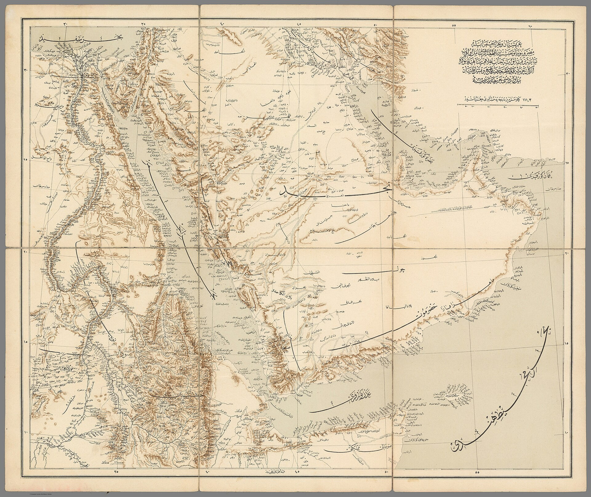

Iran steps up Gulf attacks as oil prices stay volatile
With a US naval blockade and sanctions hitting Iran's economy hard, attacks on tankers in the Strait of Hormuz have risen to their highest level since the war began.

Military tension in the Gulf has entered a new phase. According to CNN, attacks on commercial ships in the Strait of Hormuz on 21–22 November 2026 rose to their highest level since the war began this year, with several tankers hit in recent days. Al Jazeera reports that at least 25 tankers were struck within one week.
Attack on Bahrain
On the night of 21 November, Iran's Revolutionary Guard (IRGC) launched drones and ballistic missiles at US military bases in Bahrain — home to the US Fifth Fleet headquarters. Iran claimed to have destroyed two Patriot air-defence radars, but the claim has not been officially confirmed by the US or Bahrain. According to The National, a fragment of an intercepted missile fell on an industrial facility on Sitra Island, injuring two people (one critically).
A dual blockade
Al Jazeera describes the situation as a "dual blockade": the US is blockading Iran's ports from the sea and escorting tankers through the strait, while Iran threatens the Gulf. According to Euronews, about 14 Iranian tankers massed near Kharg Island on 21 November — preparing to break the blockade and deliver oil to China — and Iran's military warned of a "fierce military response" if engaged.

Trade through the strait
Per figures cited by Al Jazeera, 263 ships passed through Hormuz on 12–18 November, a weekly figure down 15% from the previous week; the number of oil tankers fell from 52 to 37. Before the war, an average of 135 ships passed through the strait each day. Insurance premiums have risen sharply.
Economic pressure
US Treasury Secretary Scott Bessent has predicted Iran's economy will shrink by more than 25% between March 2026 and March 2027. A sanctions package named "Operation Economic Outcast" was announced on 24 August, targeting the banking system, oil exports and sanctions-evasion networks. According to Al Jazeera, the price of oil crossed $100 a barrel before settling at around $83.
Iran's position
Iran's Deputy Foreign Minister Kazem Gharibabadi said: "We consider the economic siege a hostile act, and we will take any necessary measures to break this economic siege." Iranian President Masoud Pezeshkian has called the situation a "silent economic war".
Context
The war began on 28 February 2026. In April–May of that year the US imposed an initial blockade, and a ceasefire memorandum was signed on 17 June; the current blockade is a renewed phase. The central thesis of the Al Jazeera article — that Iran's attacks are intensifying because the sanctions and blockade are inflicting economic damage — is the outlet's and analysts' interpretation; some of Iran's military claims remain independently unconfirmed.